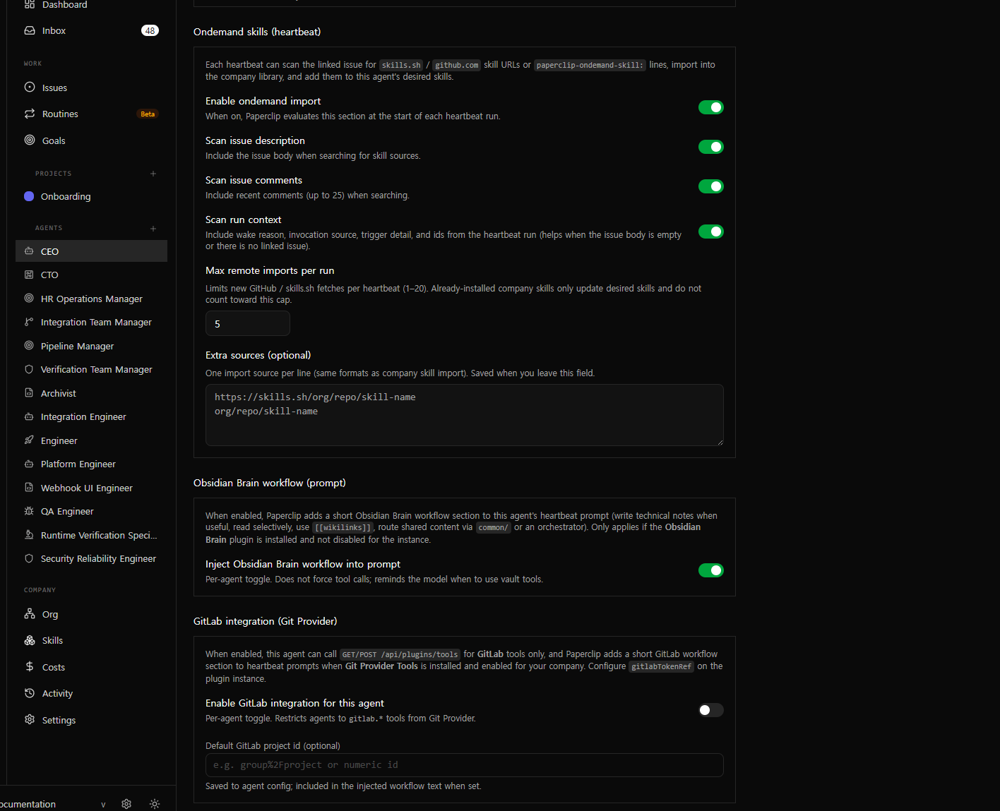

토큰 최적화 — 전체 전략 종합
에이전트 입력 토큰은 곧 비용입니다. 이 파이프라인에서 적용한 4가지 최적화 축을 정리하고, 각각이 입력 크기에 미치는 효과를 종합합니다.
← AI ORCHESTRATION PIPELINE 개요왜 토큰 최적화가 중요한가
AI 에이전트를 자율적으로 돌리면, 사람이 직접 프롬프트를 쓸 때와 달리 입력 크기를 통제할 주체가 없습니다. 이슈가 길어지고, 볼트가 커지고, 하트비트 주기가 늘어나면 입력 토큰이 무한정 커져 비용이 예측 불가능해집니다.
이 파이프라인에서는 4가지 독립적인 축으로 토큰 최적화를 적용해, 어떤 조건에서도 입력 크기가 통제 가능한 범위 안에 있도록 설계했습니다.

4가지 최적화 축
축 1. 하트비트 이슈 다이제스트 상한
로컬 CLI 어댑터 stdin에 넣는 "작업 지시" 블록에서 텍스트 길이를 코드 상수로 제한합니다.
초과분은 …[truncated]로 표시됩니다. server/src/services/heartbeat-issue-digest.ts에 상수로 고정해, 이슈/코멘트가 아무리 길어도 모델 입력 토큰이 무한정 커지지 않습니다.
축 2. Obsidian RAG 시맨틱 검색
볼트 전체를 읽는 대신 질의 기반 상위 K개 청크만 가져옵니다. 상세는 Obsidian 플러그인 페이지를 참고하세요.
볼트 크기 ∝ 입력 토큰
통제 불가, 볼트가 커질수록 비용 급증
Top-K(기본 5) × maxChunkChars로 입력 크기 고정
볼트가 아무리 커져도 동일 비용
축 3. 서버 비동기 자동화 (GitLab 동기화)
결정적 작업을 에이전트 LLM 턴에서 서버 이벤트 훅으로 옮겨 토큰 소모를 제로로 만들었습니다. 상세는 GitLab 플러그인 페이지를 참고하세요.
축 4. Obsidian 행동 가이드 + 시크릿 참조
구조적 최적화 외에, 에이전트의 행동 패턴도 토큰에 영향을 줍니다.
- 행동 가이드: 작업 시작 시 전체 폴더를 읽지 않고
list→ 선택적read, 노트는 짧게 유지 — "한 번에 다 읽기" 패턴을 피하도록 워크플로로 설계. - 시크릿 참조: 프롬프트에 긴 토큰 문자열이 반복되지 않도록,
company_secrets행 UUID로만 참조. 보안과 함께 로그·디버그 출력 노이즈도 감소.
종합 임팩트
4가지 축이 독립적으로 작동하면서 서로를 보완합니다.
| 최적화 축 | 대상 | 효과 |
|---|---|---|
| 다이제스트 상한 | 하트비트 이슈·코멘트 | 이슈 길이와 무관하게 입력 크기 고정 (12K/8K자) |
| RAG 시맨틱 검색 | Obsidian 지식 베이스 | 볼트 크기와 무관하게 Top-K 청크만 입력 |
| 비동기 자동화 | GitLab 이슈 동기화 | 에이전트 토큰 소모 제로 (서버가 직접 실행) |
| 행동 가이드 + 시크릿 참조 | 에이전트 행동 패턴·설정 | 불필요한 컨텍스트·토큰 문자열 반복 방지 |
"에이전트 입력은 항상 bounded여야 한다." — 이슈가 길어지든, 볼트가 커지든, 동기화할 대상이 늘어나든, 입력 크기는 항상 예측 가능한 상한 안에 있어야 합니다. 그렇지 않으면 자율 에이전트의 비용은 통제 불능이 됩니다.